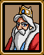
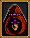

|  |
쿠스코왕
자 메타파로 떠나게! 카오스브레이커를 탄생시켜 다크솔을 막게나! |
|  |
오트란트
메타파로 가서 카오스브레이커를 얻으십시오! |
 |
감옥 경비병
케인이 사망하게되어 정말 안되었어. 열심히 싸워 그의 죽음을 헛되게 하지 말라고! |
|
케인의방 주위의 경비병
케인은 떠나겠다고 고집을 부렸어. 그를 막을수가 없었다고! |
|
장로들 주위의 남자
학자분들께서 네게 말할게 있으시다는군. |
|
장로1
고대의전설에 의하면 빛의검과 어둠의검이 하나로 합쳐진다고 하는군. 하나로 합쳐지면 새로운검이 탄생하게되어 악과 싸우게 된다는군! |
|
장로2
메타파에는 고대의연못이 있다네. 그곳에서 빛의구슬을 사용하게나. |
|
장비주위의 남자2
알레프와 토라수님을 구해서 정말 고마워! |
|
닭
꿀럭 꿀럭 꿀럭! |
|
마법사
빛의통로는 오직 빛의구슬이 있어야만 열린다고. 항상 가지고 있으라고. |
|
빛의통로를 맡고있는남자
빛의통로가 드디어 열렸다. 이제 메타파로 떠날수있어! |